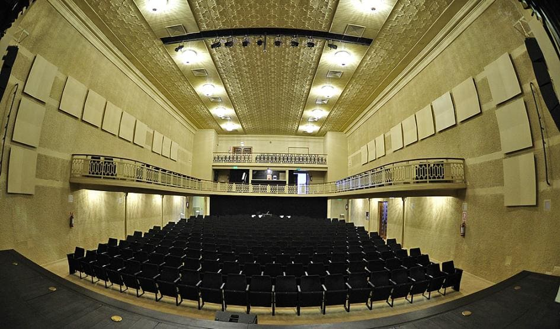

Escuchá la radio en vivo
Noticias Recientes
INAVI inauguró su nueva sede en Las Piedras;
un proyecto que apuesta a la descentralización
En UTE hay retraso en compra de materiales
quiebre de stock en cables de media tensión y transformadores en todo el país y principalmente en los barrios más vulnerables

Picudos Rojos
Preocupa su aparición a la Dirección de Patrimonio del Gobierno de Canelones
Noticias Recientes

Museo uruguayo de arte Contemporáneo dentro del Top ten mundial.
CompartirRecibimos a La Tabaré en los estudios de Radio Canelones
CompartirSe inauguró el sendero de interpretación junto al Arroyo Canelón Chico.
CompartirSe maneja la posibilidad de trasladar el proyecto de Isla Artificial a Canelones
CompartirEn UTE hay retraso en compra de materiales y quiebre de stock en cables.
Compartir

«Politeama en tu Pueblo»; un proyecto que apuesta a la descentralización
Compartir